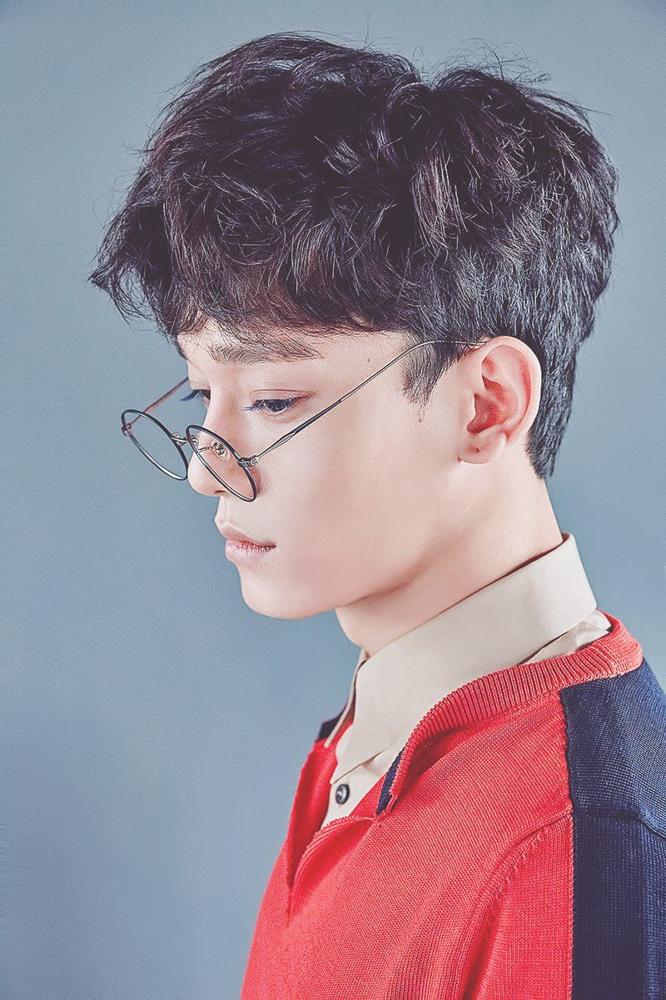
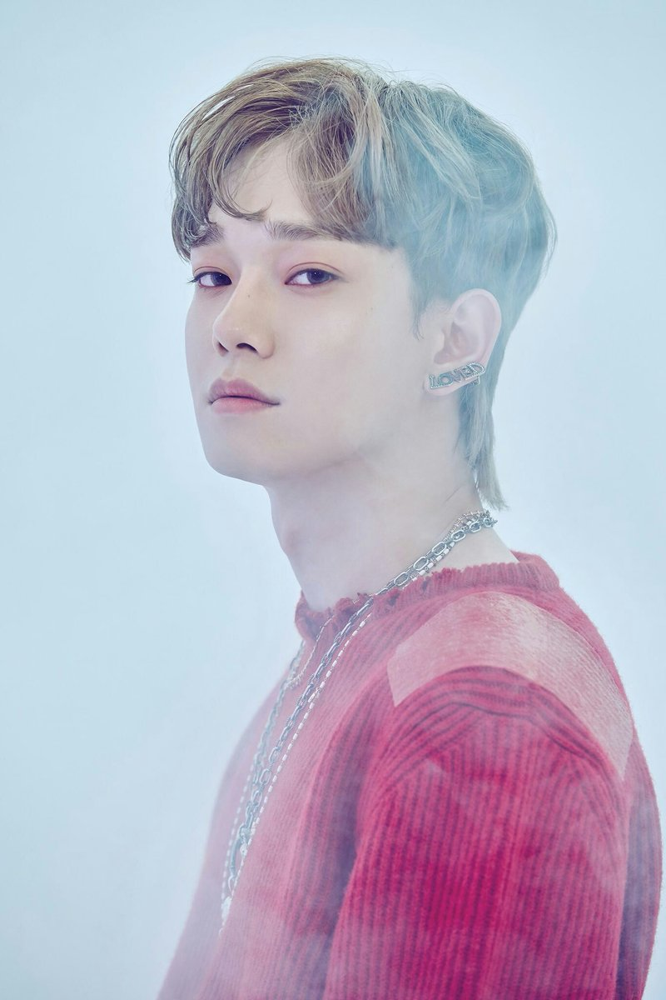
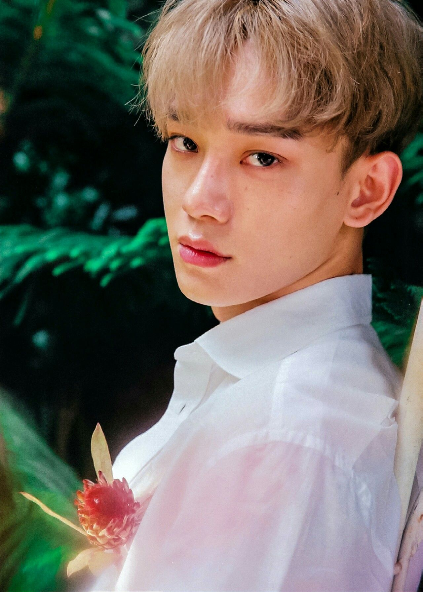

Я вітаю тебе на цій сторінці про популярну корейську
группу ЕХО, залишайся з нами:)

Я вітаю тебе на цій сторінці про популярну корейську
группу ЕХО, залишайся з нами:)
| Псевдонім | Чен |
| Справжнє ім'я | Кім Чонде |
| Родився | 21 вересня 1992 року |
| Родом з | Сіхин, Кьонгідо, Південна Корея |
| Ріст | 173 см |
| Група крові | B |
Кім Чонде (кор. 김종대, англ. Kim Jong Dae),
родився 21 вересня 1992 року, більш відомий як
Чен. Південнокорейський співак, є учасником південнокорейської групи EXO, і її підгруп EXO-M
і EXO-CBX, а також баладної групи, SM the Ballad.
1 квітня 2019 дебютував сольно з міні-альбомом April, and a Flower. Крім діяльності в групі, Чен також записав оригінальні саундтреки до різних серіалів, зокрема «The Best Luck» для It's Okay, That's Love (2014 року), «Everytime» для Descendants of the Sun (2016) і «Cherry Blossom Love Song»(2018). Також Чен - це єдиний одружений учасник і єдиний учасник який має доньку.
  